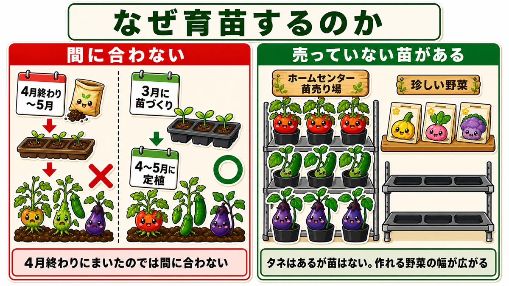
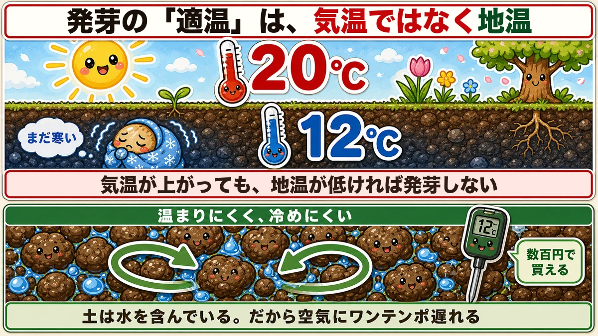
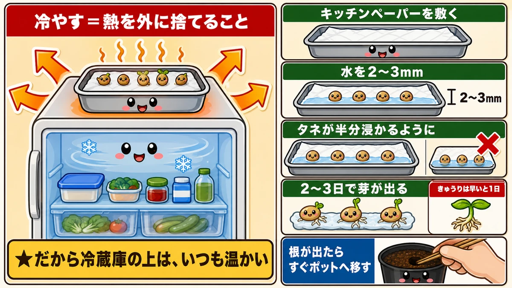
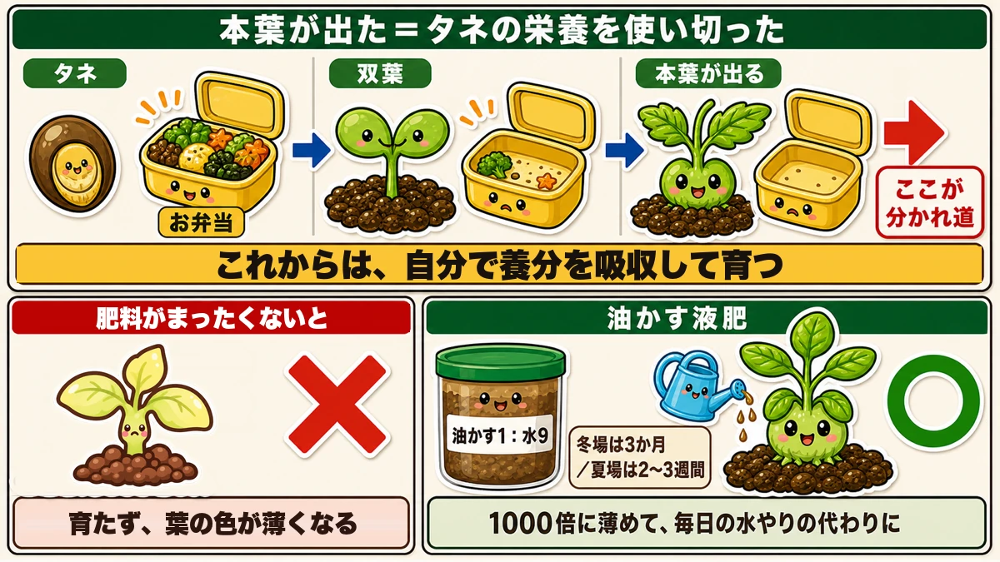
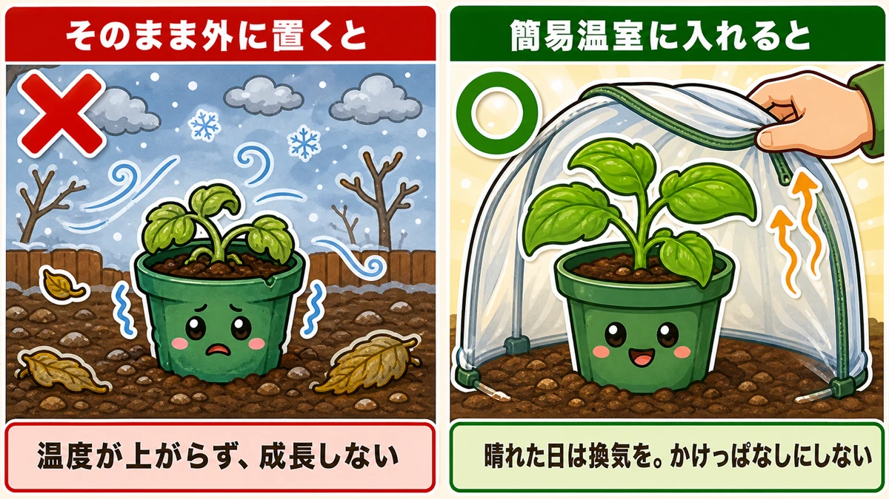
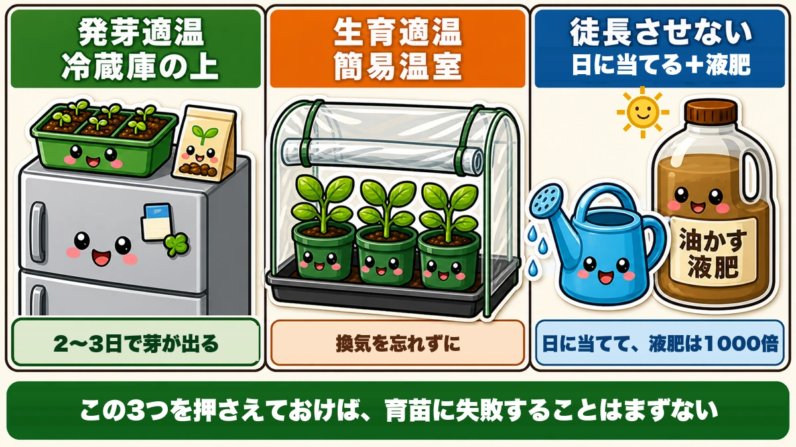

春夏野菜の育苗のやり方｜発芽は地温で考える・冷蔵庫の上で芽出し・簡易温室・野菜別の育苗日数
どうも、8150（えいこう）です🌱 家庭菜園歴8年、理科の教員免許を持っていて、有機・無農薬で野菜を育てています。
📖 この記事の目次
この記事で分かること
- 春夏野菜は、4月から5月に畑に植えるのが一般的です。種から苗を作るなら、3月ごろから始める必要があります。
- 種袋に書かれている「発芽適温」は、空気の温度ではなく、種がいる土の温度（地温）のことです。
- 春先の寒い時期でも、冷蔵庫の上のような、ほんのり暖かい場所を使えば、芽を出させることができます。
- 芽が出たら、昼は日に当てて温め、夜は冷えないように保温します。簡易温室を使うと管理しやすくなります。
- 苗がひょろひょろに伸びる（徒長する）いちばんの原因は、光不足です。芽が出たら、すぐに日に当てます。
- 苗を作る期間は、野菜によって大きく違います。なすやピーマンは2か月以上かかるので、早めに始めます。
トマトやなす、きゅうりの苗は、春になるとホームセンターにずらっと並びます。でも、「育ててみたい珍しい品種が売っていない」「自分で種から育ててみたい」と思うこともありますよね。
ただ、春先の苗づくりは、寒さとの勝負です。「種をまいたのに、なかなか芽が出ない」「芽は出たけど、ひょろひょろになってしまった」という声もよく聞きます。
安心してください。苗づくりには、いくつかのコツがあります。この記事では、芽を出させる方法から、芽が出たあとの温度の管理、ひょろひょろにしないコツ、野菜ごとの苗づくりの期間まで、順番に書いていきます。

早見：春夏野菜の育苗の基本（ひと目で分かる目安）
苗づくりのスケジュール
- 3月ごろ：種まき（なす・ピーマンはさらに早め）
- 4月中旬ごろ：お店に苗が並び始める
- 4月下旬〜5月：畑に植えつけ
育苗日数の目安
- きゅうり：約40日
- スイカ：約50日
- トマト：約60日
- なす・ピーマン：約80〜90日
温度の目安
- 発芽：種袋に書かれた「発芽適温」。これは地温（土の温度）のこと
- 夏野菜の多くは、発芽に25〜30度くらいが必要
- 芽が出てから：昼は25度以上、夜は18度以上あると順調に育つ、という説明がある
3つのコツ
- 芽を出させる：暖かい場所で、地温を確保する
- 育てる：昼は日に当てて温め、夜は冷やさない
- 徒長させない：芽が出たらすぐに日に当てる。水と肥料をやりすぎない
なぜ苗を自分で作るのか
苗を作るよさ
- お店では手に入りにくい、珍しい品種や、変わった野菜を育てられる
- 種は苗より安く、たくさんの株を育てられる
- 小さな場所に苗を集めて育てるので、水やりや虫の対策をまとめてできる
- 苗が育つようすを、間近で観察できる
苗を買うよさ
一方で、苗から始めたほうが、栽培はずっと楽になります。
種から育てると、そのぶん栽培の期間が長くなります。期間が長いほど、虫や天気の影響を受ける機会も増えて、むずかしくなります。苗を買えば、畑で育てる期間が短くなるので、そのぶん失敗のリスクも減ります。
初めてなら、お店の苗で育ててみて、慣れてきたら、育てたい品種を種から作ってみる、という順番もおすすめです。
植える日から逆算したスケジュールの例
5月の連休ごろに畑へ植える場合の、だいたいの目安です。
- 2月中旬〜下旬：なす・ピーマンの種まき（育苗日数80〜90日）
- 3月上旬：トマトの種まき（育苗日数約60日）
- 3月中旬：スイカ・メロンの種まき（育苗日数約50日）
- 3月下旬：きゅうりの種まき（育苗日数約40日）
- 4月：鉢上げ、外に慣らす
- 4月下旬〜5月上旬：畑に植えつけ
暖かい地域では少し早め、寒い地域では少し遅めになります。種袋の育苗日数も確かめて、自分の植えつけ予定日から逆算してください。
セルトレイの穴の数とポットの大きさ
- セルトレイ：72穴、128穴、200穴など、穴の数で大きさが違う。穴が少ないほど1つの穴が大きく、苗を大きめまで育てられる
- 家庭菜園なら、128穴のセルトレイを4分の1くらいに切って使うと、ちょうどいい量になる
- ポット：直径7.5cm、9cm、10.5cmなど。トマトやなすは9cmくらいのポットで植えつけまで育てることが多い
小さな容器のまま長く育てると、根がいっぱいになって育ちが止まります。苗の大きさに合わせて、容器も大きくしていきます。
作業の手順
ここからは、春夏野菜の苗づくりの流れを、順番に書いていきます。
手順1：種と道具をそろえる
- 種：育てたい品種の種。種袋の裏で、発芽適温、生育適温、育苗日数を確かめる
- 種まき用の土：肥料が控えめで、芽を出させるのに向いた土
- 育苗用の土（培養土）：肥料が入っていて、苗を育てるのに向いた土
- セルトレイやポット
- 温度計：地温を測るためのもの
- 保温の道具：簡易温室、発泡スチロールの箱、育苗用の電熱マットなど
種まき用の土と、育苗用の土を使い分けると、芽の出も、そのあとの育ちもよくなる、という説明があります。
手順2：土を湿らせておく
種をまく前に、土にしっかり水を含ませておきます。
乾いた土に種をまいてから水をやると、水が均一にしみこまず、ところどころ乾いたままになることがあります。袋の土に水を少しずつ混ぜて、握ると固まるくらいに湿らせてから、セルトレイやポットに入れると、芽の出がそろいやすくなります。
手順3：発芽適温は「地温」で考える
種袋の裏には、「発芽適温」と「生育適温」が書かれています。
ここで大事なのは、この温度は、空気の温度（気温）ではなく、土の温度（地温）だということです。種は土の中にいるので、土の温度が上がらなければ、どんなに部屋が暖かくても芽を出しません。

春先は、昼間の気温が上がっても、土の温度はなかなか上がりません。土は空気より温まりにくく、冷えにくい性質があるからです。気温だけを見て「もう暖かいから大丈夫」と思っていると、土の中はまだ冷たいまま、ということがよくあります。
簡単な温度計を1本用意して、土に差して地温を測ってみてください。地温が分かると、芽が出ない理由も見えてきます。
なお、温度を上げすぎるのもよくありません。種袋に書かれた温度の範囲の、下のほうの温度でも、問題なく芽は出ると言われます。上げすぎると、種が傷むこともあります。
手順4：冷蔵庫の上で芽を出させる
家の中で、ほんのり暖かくて、温度が安定している場所。そのひとつが、冷蔵庫の上です。冷蔵庫は、背面や上部から熱を出しているので、その上はほんのり暖かくなっていることが多いんです。
やり方の一例です。
- 浅いプラスチックのトレーに、キッチンペーパーを敷く
- 水を、2〜3mmくらいの高さまで入れる
- 種をキッチンペーパーの上に並べる。種が半分くらい水につかるように
- トレーを冷蔵庫の上に置く（乾かないように、ふたを軽くかぶせる）
- 毎日のぞいて、水が減っていたら足す
種から小さな根が出てきたら、その種をセルトレイやポットの土に移して植えます。根を傷めないように、ピンセットなどでそっと扱ってください。

この方法のよさは、芽が出るかどうかを目で確かめてから土に植えられることです。毎朝トレーをのぞいて、小さな白い根が顔を出しているのを見つけたときは、思わずうれしくなりますよ。家族で毎朝のぞいて、根が出た種の数を数えるのも、楽しい朝の日課になります。土にまいて何日も待って、結局出なかった、ということが避けられます。
ほかにも、濡れた布に種を包んで、体温で温めて芽を出させる、というユニークな方法を紹介している人もいます。いずれにしても、「暖かくて、乾かない場所」に置くのがポイントです。
根が出た種の移し方
冷蔵庫の上などで芽出しした種は、根が少し出たところで土に移します。
- 根が出たばかり（数mm）のうちに移すのがいちばん扱いやすい。根が長く伸びすぎると、移すときに折れやすくなる
- 湿らせた土に、指や割りばしで小さなくぼみを作る
- 根を下に向けて、種をそっと置く
- 上から薄く土をかけて、軽く押さえる
根の先はとても弱いので、指でつままず、ピンセットや割りばしでやさしく扱ってください。移したら、すぐに暖かい場所に戻し、芽が地上に出てきたら日に当てます。
手順5：土にまく場合
最初から土にまく場合は、次のようにします。
- セルトレイやポットに、湿らせた種まき用の土を入れる
- 種をまいて、薄く土をかける
- 上から軽く押さえる
- 保温できる場所に置き、土を乾かさないようにする
種をまいたあとの押さえ方は、野菜によって説明が違います（あとで書きます）。トマトなどは軽く押さえるくらいで十分です。
手順6：芽が出たら、すぐに日に当てる
芽が出たら、すぐに日の当たる場所に移します。ここが、苗をひょろひょろにしないための、いちばん大事な分かれ道です。
暗い場所や、冷蔵庫の上に置いたままにしていると、苗は光を求めて、一晩でひょろひょろに伸びてしまいます。芽が出るまでは暗くてもいいのですが、芽が出たら、その日のうちに光が必要です。朝に芽を見つけたら、すぐに窓辺や簡易温室へ移してあげてください。芽が出始めたら、毎日のぞいて、すぐに光の当たる場所へ移してください。

手順7：簡易温室で、昼と夜の温度を管理する
芽が出たあとは、生育適温を保ちながら育てます。春先の寒い時期は、簡易温室が便利です。
- 簡易温室：棚にビニールのカバーがかかったもの。ベランダや庭に置ける
- 発泡スチロールの箱や、透明な衣装ケースでも代用できる
- 育苗用の電熱マットとサーモスタット（温度を一定に保つ機械）を使うと、夜も温度を保てる。センサーをポットの土に差しておくと、地温で管理できる

管理のしかたは、昼と夜で切りかえます。
- 昼：日に当てる。晴れた日は中が暑くなりすぎるので、カバーやふたを少しずらして換気する
- 夜：カバーやふたを閉めて保温する。冷えこむ夜は、電熱マットを使う
昼は25度以上、夜は18度以上あると順調に育つ、という説明があります。ただ、もっと低い温度でも育つという説明もあるので、目安として考えてください。
電熱マットとサーモスタットの使い方
春先の苗づくりで、いちばん頼りになるのが、育苗用の電熱マットです。
- 電熱マットの上にセルトレイやポットを並べる
- サーモスタット（温度を一定に保つ機械）につないで、温度を設定する
- センサーは、ポットの土に差しこむ。空気ではなく、土の温度で管理するため
- 夜は電源を入れて保温し、日が出て温まってきたら電源を切って、ふたを少し開けて換気する
発泡スチロールの箱の底に電熱マットを敷いて、ふたをすれば、簡単な育苗箱になります。温度を上げすぎると、種や苗が傷むので、設定温度は種袋の発芽適温の範囲内にしてください。
温床という方法
電気を使わずに苗を温める、昔ながらの方法が「温床（おんしょう）」です。
落ち葉や米ぬか、わらなどを積み重ねて水をかけ、踏み固めておくと、発酵して熱が出ます。その熱を利用して、上に置いた苗床を温めるしくみです。
手間はかかりますが、電気代がかからず、使い終わった材料は、腐葉土やたい肥として畑に戻せます。昔の農家さんは、こうして春先の苗を育てていたんですね。
手順8：水やりは、乾き具合を見て
水やりは、土の乾き具合を見て行います。
- 土の表面が乾いてきたら、ポットの底まで水がしっかり届くように、たっぷりやる
- 土が湿っているあいだは、やらない
日によく当てると、葉から水分が蒸発して、土の水分もちょうどよく減っていきます。逆に、日が当たらない場所で水をたっぷりやると、土がいつも湿ったままになり、苗がひょろひょろに伸びたり、根が弱ったりします。
手順9：本葉が出たら、養分を考える
芽が出て最初に開く2枚の葉（双葉）は、種の中にたくわえていた栄養で育っています。本葉が出始めるころには、その栄養をほぼ使い切っている、という説明があります。
ここから先は、土の中の養分で育つことになります。育苗用の土に肥料が入っていれば、しばらくはそれで十分です。葉の色が薄くなってきたら、ひとまわり大きなポットに植えかえる（鉢上げ）か、薄めた液体肥料を少し与えます。
ただし、肥料のやりすぎは、徒長の原因になります。控えめを心がけてください。
手順10：鉢上げをする
セルトレイで育てている場合は、本葉が出てきて落ち着いたら、ひとまわり大きなポットに鉢上げします。
- 根鉢（根と土のかたまり）をくずさないように、そっと抜く
- 新しいポットに培養土を入れて植えかえる
- 植えかえたら、たっぷり水をやる
鉢上げの手間を減らしたいなら、水を含ませるとふくらむ、固形の育苗用の土（ピートモスなどを圧縮したもの）を使う方法もあります。苗が育ったら、そのままポットや畑に植えられるので、根を傷めにくいのがよいところです。
植えつけ前の最終チェック
畑に植える前に、苗のようすを確かめておきましょう。
- 本葉が十分に出ているか（トマトなら7〜8枚、最初の花のつぼみが見えるくらい）
- 茎が太く、がっしりしているか
- 葉の色が濃く、虫や病気のあとがないか
- 根がポットの中で白く元気に張っているか（茶色く巻いていないか）
条件がそろっていれば、植えどきです。畑の準備ができていなければ、ひとまわり大きなポットに鉢上げして、もう少し待ちます。
手順11：植える前に、外に慣らす
畑に植える1週間くらい前から、苗を外の環境に慣らします。日中だけ外に出し、夜は取りこむ、というふうに、少しずつ外にいる時間を長くしていきます。
いきなり畑に植えると、強い日差しや風、夜の冷えこみで、苗が弱ってしまうことがあります。外に慣らしておくと、葉や茎がしっかりして、植えたあとの根づきがよくなります。
毎日の見回りのポイント
- 朝：土の乾き具合を見る。乾いていたら水をやる
- 朝：苗の背丈を見る。昨日より急に伸びていたら、光不足や温度の上げすぎを疑う
- 晴れた日の昼：簡易温室や箱の中が暑くなりすぎていないか。換気する
- 夕方：ふたやカバーを閉めて、夜の冷えこみに備える
- 数日おき：混みあってきたら間引く。根がいっぱいになってきたら鉢上げ
苗は、毎日少しずつ変わっていきます。毎朝のぞく習慣が、がっしりした苗を作るいちばんの近道です。
野菜ごとの苗づくりのポイント
トマト・ミニトマト
- 育苗日数は約60日。畑に植える日から逆算して種をまく
- 発芽には暖かさが必要。芽が出たら、すぐに日に当てる
- 種まきのあとは、軽く押さえるくらいで十分
- 最初の花が咲き始めるころが、植えどきの目安
なす
- 育苗日数は約80〜90日と長い。春夏野菜の中で、いちばん早く種まきが必要
- 発芽にも、育つのにも、高い温度が必要。保温の設備がないとむずかしい
- 慣れないうちは、苗を買うのも立派な選択
ピーマン・ししとう・とうがらし
- なすと同じく、育苗日数が約80〜90日と長い
- 高い温度が必要。夜の冷えこみに特に気をつける
きゅうり
- 育苗日数は約40日と短い。あまり早くまきすぎると、苗が大きくなりすぎる
- 根が弱く、植えかえで傷みやすいので、ポットに直接まいて、そのまま植えるのがおすすめ
- 夏まきの地這いきゅうりなどは、暑さを避けて半日陰で苗を作る、という方法もある
かぼちゃ・ズッキーニ
- 種が大きく、芽が出やすい
- かぼちゃは、種をまいたあと、上から強く押しつけると芽の出が悪くなる、という注意がある
- かぼちゃは育つ勢いが強いので、芽が出てからの水やりは控えめに、という説明もある
- ズッキーニは、寒さに弱いので、暖かくなってから植える
スイカ・メロン
- 育苗日数は約50日
- 高い温度が必要。保温してしっかり芽を出させる
- 接ぎ木苗が一般的な野菜なので、自分で作る場合は、自根の苗になる
オクラ・枝豆・とうもろこし
- オクラ：暖かさが必要。直まきでもいいが、苗を作ると芽の出をそろえやすい
- 枝豆：鳥に種を食べられやすいので、苗を作ってから植えると安心
- とうもろこし：根が深く伸びる野菜なので、植えかえには注意。早めに植える
大根やにんじんのように、まっすぐな根を持つ野菜は、苗を作って植えかえると根が傷むので、畑に直接まくのが基本です。
育苗の記録をつける
苗づくりは、毎年の積み重ねで上手になっていきます。種をまいた日、芽が出た日、鉢上げした日、畑に植えた日をメモしておくと、次の年の計画がぐっと立てやすくなります。
- 種をまいた日と、芽が出た日（何日かかったか）
- そのときの地温や、置いた場所
- 徒長したかどうか、その原因
- 畑に植えた日と、そのときの苗の大きさ
自分の家の窓辺や、ベランダの環境で、芽が出るまでや植えられる大きさになるまでに、どれくらいの日数がかかるかが分かってくると、種袋の目安よりも、ずっと頼りになる自分だけの目安ができあがります。
失敗の見分け方
種をまいたのに、芽が出ない
- 地温が低い：温度計で土の温度を測ってみる。保温して温度を上げる
- 土が乾いた：芽が出るまで、土を乾かさない
- 水が多すぎて、種が腐った：水のやりすぎに注意
- 深くまきすぎた：種袋の目安を確かめる
- 種が古い：発芽率が落ちていることがある
芽が出たけど、ひょろひょろになった
- 芽が出たあと、日に当てるのが遅れた
- 日当たりが足りない
- 夜の温度が高すぎる（暖かい部屋に置いている）
- 水が多すぎる
- 肥料が多すぎる
いちばん多いのは、光不足です。
苗が育たない、葉の色が悪い
- 夜の温度が低すぎる
- 肥料が足りない（本葉が出たあと）
- 根がポットいっぱいになっている（鉢上げの時期）
苗が根元から倒れて、枯れた
根元が細くくびれて倒れるのは、苗立枯病（なえたちがれびょう）の可能性があります。土の中の菌が原因で、水のやりすぎや、蒸れた環境で出やすくなります。倒れた苗は取り除き、残った苗は水やりを控えめにして、風通しをよくしてください。種まきには、新しい種まき用の土を使うと安心です。
簡易温室の中で、苗がしおれた
晴れた日に換気を忘れて、中が暑くなりすぎた可能性があります。晴れた日の昼は、必ずカバーを少し開けてください。
説明が分かれていること
苗づくりは、早めか、例年どおりか
- ここ数年は、今までの常識より半月から1か月早く栽培を始めたほうが、結果がいい、という説明
- 植えつけは、4月の終わりから5月の初めが無難で理想、という説明
早く始めるのは、夏の猛暑が来る前に収穫のピークを迎えるため。例年どおりがいいのは、夜の冷えこみで苗が傷むのを避けるため。保温の設備があるか、住んでいる地域の気候はどうか、で選んでください。
育苗に畑の土を使えるか
- 畑の土は水はけが悪かったり、虫がいたりするので、育苗には使わない。市販の培養土を使う、という説明
- ポットに直接種をまいて、畑の土をそのまま使っても十分できる、という説明
畑の土を使うと、芽の出が少し悪くなったという経験を話す人もいます。初めてなら、市販の種まき用の土や培養土を使うのが安心です。
種をまいたあと、押さえるか
- 軽く上から押さえるだけでいい、という説明（トマト）
- 上から押しつけると芽の出が悪くなる、という説明（かぼちゃ）
- 土を入れたあと、もう一度押しこむ、という説明
種と土をくっつけることは大切ですが、押す強さは、野菜や土によって違います。育苗の土はやわらかいので、軽く押さえる程度が無難です。
水やりは、毎日か、乾いてからか
- 水の代わりに、薄めた液体肥料を毎日やる、という方法
- 土の乾き具合を見て、乾いたらたっぷりやる、という方法
- かぼちゃは育つ勢いが強いので、水やりはなるべく少なく、という説明
育て方の考え方がそれぞれ違うので、どれかひとつが正しいとは言えません。初めてなら、乾いたらたっぷり、を基本にするのがおすすめです。
日に当てるか、半日陰か
- 春先のトマトやズッキーニは、しっかり日に当てる。葉から水分が蒸発して、土の水分もちょうどよくなる、という説明
- 夏場のきゅうりの苗は、日陰の時間がある半日陰で育てる、という説明
季節によって変わります。寒い春先は日によく当てて、暑い夏は強い日差しを避ける、と考えてください。
夜は何度あれば育つか
- 昼25度以上、夜18度以上で順調に育つ、という説明
- 芽が出てしまえば、平均15度くらいで育つ。夜はもっと下がることもある、という説明
同じ人の中でも、言い方が違うことがあります。夜18度は「順調に育つ」目安、それより低くても「育たないわけではない」と考えるといいと思います。
よくある質問
Q. 苗づくりは、何月から始めればいいですか？
A. 畑に植える日から、育苗日数を逆算して決めます。5月の連休に植えるなら、トマトは3月上旬、なすやピーマンは2月中旬から下旬、きゅうりは3月下旬ごろが目安です。地域によって前後します。
Q. 冷蔵庫の上が暖かくありません
A. 冷蔵庫の種類によっては、上があまり暖かくならないこともあります。最近の冷蔵庫は、熱を横や背面から逃がすものも多いです。温度計で確かめてみてください。暖かくなければ、発泡スチロールの箱に入れてテレビの近くに置く、育苗用の電熱マットを使う、など、ほかの暖かい場所を探してみてください。
Q. ベランダでも苗づくりはできますか？
A. できます。ベランダは、建物に守られていて、庭より暖かいことも多いです。風が強いベランダでは、簡易温室が倒れないように、手すりなどにひもで固定しておいてください。簡易温室を置けば、春先の苗づくりにも使えます。ただ、日当たりが限られる場合は、日の当たる時間が長い場所を選んでください。
Q. 苗をいくつ作ればいいですか？
A. 植えたい株数より、少し多めに作っておくと安心です。植えたい数より何株か多めに作っておけば、その中から、いちばんがっしりした苗を選んで植えられます。余った苗は、家族や友人に分けると喜ばれますよ。芽が出なかったり、途中で弱ったりする苗もありますし、植えたあとに虫や鳥にやられたときの予備にもなります。
Q. 種が余りました。来年も使えますか？
A. 乾燥剤と一緒に密閉して、冷蔵庫などの涼しい場所に保存すれば、翌年も使えることが多いです。開けた日付を袋に書いておくと、あとで使うときの目安になります。なすやトマトの種は比較的長持ちすると言われます。まく前に、発芽するか試してみると安心です。
Q. 苗づくりに、肥料入りの培養土を最初から使ってもいいですか？
A. 使えないことはありませんが、芽を出させる段階では、肥料の少ない種まき用の土のほうが向いています。肥料が多いと、出たばかりの根が傷んだり、苗が徒長しやすくなったりすることがあります。種まきは種まき用の土で、鉢上げからは培養土で、と使い分けるのがおすすめです。
Q. 窓辺で苗を育てています。カーテンは開けたほうがいいですか？
A. 日中は、レースのカーテンも開けて、できるだけ直接光が当たるようにしてください。ガラス越しの光は、外の光より弱くなっています。晴れた暖かい日は、ベランダや庭に出して日光浴をさせると、苗ががっしりします。夜は窓辺が冷えるので、部屋の内側に移すと安心です。
Q. 苗の葉に、小さな虫がついていました
A. 春先の苗には、アブラムシなどがつくことがあります。数が少なければ、指やピンセットで取るか、やわらかい筆で払い落としてください。簡易温室の中は暖かいので、虫も増えやすい環境です。毎日の見回りで、葉の裏ものぞいてみましょう。
Q. 苗づくりに失敗したら、どうすればいいですか？
A. 4月中旬ごろからお店に苗が並ぶので、そちらで補えば大丈夫です。失敗した原因（温度、光、水など）をメモしておくと、次の年の苗づくりがぐっと上手になります。一度でうまくいかなくても、何年か続けるうちに、自分の家の環境に合ったやり方が見えてきますよ。
Q. 種から育てた苗と、買った苗、育ち方は違いますか？
A. しっかり育てた苗なら、買った苗と同じように育ちます。ただ、お店の苗は、病気に強い台木につないだ接ぎ木苗のことが多く、自分で種から作ると、ふつうは自根の苗になります。同じ場所で同じ野菜を続けて育てている畑なら、接ぎ木苗のほうが病気に強いことがあります。
Q. 芽が出るまで、何日くらいかかりますか？
A. 温度がちょうどよければ、トマトやきゅうりなら数日から1週間くらい、なすやピーマンはもう少し時間がかかります。温度が低いと、さらに日数がかかります。2週間たっても出ない場合は、温度や水分、種の古さを見直して、まき直しを考えてください。
Q. 電熱マットは、ずっとつけっぱなしでいいですか？
A. 夜や、寒い日は使い、晴れて温かい日中は電源を切るのがおすすめです。つけっぱなしだと、日中に温度が上がりすぎて、苗が傷んだり徒長したりすることがあります。サーモスタットで温度を設定しておけば、上がりすぎを防げます。
Q. 苗が大きくなりすぎて、植える日まで待てません
A. 早く種をまきすぎると、植えつけの時期より前に苗が大きくなりすぎてしまいます。ひとまわり大きなポットに鉢上げして、根が伸びられる場所を作ってあげてください。暖かくなっていれば、少し早めに植えて、不織布などで保温する方法もあります。
Q. 苗の葉が、白っぽく焼けたようになりました
A. 急に強い日差しに当てたり、簡易温室の中が暑くなりすぎたりすると、葉が焼けて白っぽくなることがあります。少しずつ日に慣らすこと、晴れた日はこまめに換気することを心がけてください。焼けた葉はもとに戻りませんが、新しい葉が元気に出てくれば大丈夫です。
Q. 子どもと一緒にできることはありますか？
A. 冷蔵庫の上での芽出しは、毎日のぞいて、根が出てくるようすを観察できるので、子どもにもおすすめです。暗い場所と明るい場所で、同じ苗を育ててみて、伸び方の違いを比べてみるのも、いい観察になります。
学ぶ🔬 なぜ苗は、ひょろひょろに伸びるのか
ここからは、苗づくりのしくみについて、少しだけ深く書いておきます。読み飛ばしても大丈夫です。
光が足りないと、上を目指す
植物は、光を受けて栄養を作ります。光が足りないと、少しでも多くの光を受けようと、茎を上へ上へと伸ばします。
暗い場所で育ったもやしが、白く細長いのは、このためです。春先の窓辺や、芽が出たあとも暗い場所に置いていた苗がひょろひょろになるのも、同じしくみです。芽が出たらすぐに日に当てる、というのは、苗が「上を目指す」必要をなくすためなんです。
肥料は、足りなくても多すぎてもだめ
肥料が足りないと、苗は葉の色が薄くなり、育ちが遅れます。逆に、肥料が多すぎると、苗は茎や葉ばかりを勢いよく伸ばして、ひょろひょろになりやすくなります。
本葉が出てから、葉の色を見ながら、ほどほどに。これが、苗の肥料のコツです。
なぜ土は、空気より遅れて温まるのか
土は、空気に比べて温まりにくく、冷えにくい性質があります。特に、水を含んだ土は、温まるのにたくさんの熱が必要です。
だから、春先に気温が上がっても、土の温度はなかなか追いつきません。逆に、秋に気温が下がっても、土はしばらく暖かいままです。種袋の発芽適温が地温で書かれているのは、種にとって大事なのが、まわりの土の温度だからなんですね。
なぜ夏野菜は、暖かさが必要なのか
トマトは南米、なすはインド、きゅうりはインドのヒマラヤのふもと、と言われるように、夏野菜の多くは、暖かい地域が生まれ故郷です。
そうした野菜は、暖かい環境で芽を出し、育つようにできています。寒い時期に種をまいても、なかなか芽が出なかったり、芽が出ても育ちが遅かったりするのは、このためです。春先の苗づくりで保温が欠かせないのは、野菜の故郷の暖かさを、人の手で作ってあげるためなんですね。
種は、水を吸って目を覚ます
乾いた種は、眠ったような状態で、じっとしています。水を吸うと、種の中で眠っていた働きが動き出し、芽を出す準備を始めます。
このとき、温度がちょうどよければ、準備がどんどん進んで、やがて根が出てきます。温度が低すぎると、準備がなかなか進まず、そのあいだに種が腐ってしまうこともあります。冷蔵庫の上のような暖かい場所で、水を含ませたキッチンペーパーに種を置くのは、この「目を覚ます」条件を整えるためなんです。
双葉と本葉の違い
芽が出て最初に開く2枚の葉は、「双葉（子葉）」と呼ばれます。双葉は、種の中にたくわえていた栄養を使って開く葉で、形も、そのあとに出る葉とは違うことが多いです。
双葉のあとに出てくるのが「本葉」です。本葉は、その野菜らしい形をしています。トマトならトマトの、きゅうりならきゅうりの葉の形ですね。本葉が出始めるころには、種の栄養はほぼ使い切っていて、ここからは根で吸った養分と、葉で作った栄養で育っていく、という説明があります。
昼と夜の温度差が、がっしりした苗を作る
植物は、昼に光合成で作った栄養を、夜のあいだに使って体を作ります。夜の温度が高すぎると、呼吸がさかんになって栄養をたくさん使い、茎を伸ばす方向に体が向かいやすくなります。
昼はしっかり日に当てて温め、夜は冷やしすぎない程度に涼しくする。この温度の差が、節間のつまった、がっしりした苗を作るコツと言われます。
まとめ
ここまで読んでくださって、ありがとうございます！
春夏野菜の育苗のポイントを、もう一度まとめておきます。
- 春夏野菜の苗づくりは3月ごろから。なす・ピーマンはさらに早め
- 発芽適温は地温。温度計を1本用意して、土の温度を測る
- 冷蔵庫の上など、ほんのり暖かくて乾かない場所で芽を出させる
- 芽が出たら、すぐに日に当てる。ここが徒長を防ぐ分かれ道
- 簡易温室で、昼は換気、夜は保温
- 水は、乾いたらたっぷり。肥料はほどほどに
- 本葉が出て落ち着いたら鉢上げ。植える前に外に慣らす
- 育苗日数は野菜ごとに違う。植える日から逆算して種をまく

自分で種から育てた苗が、畑で大きく育って実をつけたときの喜びは、また格別です。最初は1種類、トマトかきゅうりから始めてみてください。うまくいかなくても、お店の苗で補えば大丈夫。気楽に挑戦してみましょう。
まずは、種袋の裏の「発芽適温」と「育苗日数」を読むところから始めてみましょう🍅
簡易温室（ビニールカバー付き）
発芽したあと、そのまま外に置くと育ちません。3月の外気では、生育適温に届かないからです。棚ごとビニールで包むタイプなら、置くだけで日中の温度が上がります。カバーは春が終わったら外して、普通の棚として使えます。
![[商品価格に関しましては、リンクが作成された時点と現時点で情報が変更されている場合がございます。]](https://hbb.afl.rakuten.co.jp/hgb/56e737da.59472026.56e737db.311c7b4f/?me_id=1280948&item_id=10022268&pc=https%3A%2F%2Fthumbnail.image.rakuten.co.jp%2F%400_mall%2Fweiwei%2Fcabinet%2Fshouhin-image03%2Faah004-r.jpg%3F_ex%3D240x240&s=240x240&t=picttext "[商品価格に関しましては、リンクが作成された時点と現時点で情報が変更されている場合がございます。]")

油かす
徒長させない鍵がこれです。本葉が出たら、油かす1に対して水9で薄めた液肥を与えます。化成肥料と違って効き方がゆるやかなので、一気に伸びて間のびすることがありません。臭わないタイプなら、室内で作業しても平気です。
![[商品価格に関しましては、リンクが作成された時点と現時点で情報が変更されている場合がございます。]](https://hbb.afl.rakuten.co.jp/hgb/55e75fe5.20db4cd1.55e75fe7.d1ec32cc/?me_id=1194164&item_id=10000908&pc=https%3A%2F%2Fthumbnail.image.rakuten.co.jp%2F%400_mall%2Fgardening%2Fcabinet%2Fhiryousennyouhiryo%2Fomakase-1.jpg%3F_ex%3D240x240&s=240x240&t=picttext "[商品価格に関しましては、リンクが作成された時点と現時点で情報が変更されている場合がございます。]")
プラグトレー128穴
1穴が小さいぶん、置き場所を取りません。冷蔵庫の上という限られた場所で発芽させるなら、これくらいの大きさがちょうどいい。本葉が3〜4枚になったらポットへ移します。
![[商品価格に関しましては、リンクが作成された時点と現時点で情報が変更されている場合がございます。]](https://hbb.afl.rakuten.co.jp/hgb/56d221a0.da732c49.56d221a1.b57a6709/?me_id=1230952&item_id=10006155&pc=https%3A%2F%2Fthumbnail.image.rakuten.co.jp%2F%400_mall%2Fnou-nou%2Fcabinet%2Fnousi2%2F0108007400004.jpg%3F_ex%3D240x240&s=240x240&t=picttext "[商品価格に関しましては、リンクが作成された時点と現時点で情報が変更されている場合がございます。]")
土壌温度計
タネ袋の適温は気温ではなく地温です。ここを見誤ると、いつまでも発芽しません。土に挿すだけで分かるものが1本あると、「まだ早い」「もういける」の判断がつきます。
![[商品価格に関しましては、リンクが作成された時点と現時点で情報が変更されている場合がございます。]](https://hbb.afl.rakuten.co.jp/hgb/56d214ed.82e55a39.56d214ee.0964bf9a/?me_id=1335769&item_id=10000348&pc=https%3A%2F%2Fthumbnail.image.rakuten.co.jp%2F%400_mall%2Fgood-item%2Fcabinet%2F06374369%2Fcompass1553596495.jpg%3F_ex%3D240x240&s=240x240&t=picttext "[商品価格に関しましては、リンクが作成された時点と現時点で情報が変更されている場合がございます。]")